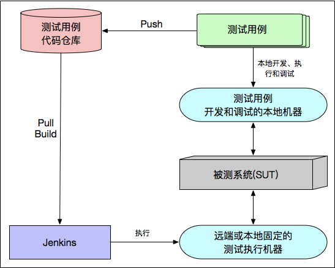
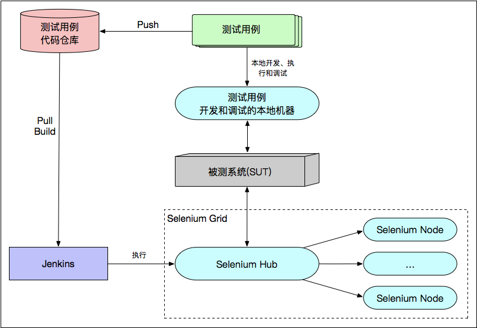

- 00 开篇词 从“小工”到“专家”，我的软件测试修炼之道.md.html
- 01 你真的懂测试吗？从“用户登录”测试谈起.md.html
- 02 如何设计一个“好的”测试用例？.md.html
- 03 什么是单元测试？如何做好单元测试？.md.html
- 04 为什么要做自动化测试？什么样的项目适合做自动化测试？.md.html
- 05 你知道软件开发各阶段都有哪些自动化测试技术吗？.md.html
- 06 你真的懂测试覆盖率吗？.md.html
- 07 如何高效填写软件缺陷报告？.md.html
- 08 以终为始，如何才能做好测试计划？.md.html
- 09 软件测试工程师的核心竞争力是什么？.md.html
- 10 软件测试工程师需要掌握的非测试知识有哪些？.md.html
- 11 互联网产品的测试策略应该如何设计？.md.html
- 12 从0到1：你的第一个GUI自动化测试.md.html
- 13 效率为王：脚本与数据的解耦 + Page Object模型.md.html
- 14 更接近业务的抽象：让自动化测试脚本更好地描述业务.md.html
- 15 过不了的坎：聊聊GUI自动化过程中的测试数据.md.html
- 16 脑洞大开：GUI测试还能这么玩（Page Code Gen + Data Gen + Headless）？.md.html
- 17 精益求精：聊聊提高GUI测试稳定性的关键技术.md.html
- 18 眼前一亮：带你玩转GUI自动化的测试报告.md.html
- 19 真实的战场：如何在大型项目中设计GUI自动化测试策略.md.html
- 20 与时俱进：浅谈移动应用测试方法与思路.md.html
- 21 移动测试神器：带你玩转Appium.md.html
- 22 从0到1：API测试怎么做？常用API测试工具简介.md.html
- 23 知其然知其所以然：聊聊API自动化测试框架的前世今生.md.html
- 24 紧跟时代步伐：微服务模式下API测试要怎么做？.md.html
- 25 不破不立：掌握代码级测试的基本理念与方法.md.html
- 26 深入浅出之静态测试方法.md.html
- 27 深入浅出之动态测试方法.md.html
- 28 带你一起解读不同视角的软件性能与性能指标.md.html
- 29 聊聊性能测试的基本方法与应用领域.md.html
- 30 工欲善其事必先利其器：后端性能测试工具原理与行业常用工具简介.md.html
- 31 工欲善其事必先利其器：前端性能测试工具原理与行业常用工具简介.md.html
- 32 无实例无真相：基于LoadRunner实现企业级服务器端性能测试的实践（上）.md.html
- 33 无实例无真相：基于LoadRunner实现企业级服务器端性能测试的实践（下）.md.html
- 34 站在巨人的肩膀：企业级实际性能测试案例与经验分享.md.html
- 35 如何准备测试数据？.md.html
- 36 浅谈测试数据的痛点.md.html
- 37 测试数据的“银弹”- 统一测试数据平台（上）.md.html
- 38 测试数据的“银弹”- 统一测试数据平台（下）.md.html
- 39 从小作坊到工厂：什么是Selenium Grid？如何搭建Selenium Grid？.md.html
- 40 从小工到专家：聊聊测试执行环境的架构设计（上）.md.html
- 41 从小工到专家：聊聊测试执行环境的架构设计（下）.md.html
- 42 实战：大型全球化电商的测试基础架构设计.md.html
- 43 发挥人的潜能：探索式测试.md.html
- 44 测试先行：测试驱动开发(TDD).md.html
- 45 打蛇打七寸：精准测试.md.html
- 46 安全第一：渗透测试.md.html
- 47 用机器设计测试用例：基于模型的测试.md.html
- 48 优秀的测试工程师为什么要懂大型网站的架构设计？.md.html
- 49 深入浅出网站高性能架构设计.md.html
- 50 深入浅出网站高可用架构设计.md.html
- 51 深入浅出网站伸缩性架构设计.md.html
- 52 深入浅出网站可扩展性架构设计.md.html
- 测试专栏特别放送 浅谈全链路压测.md.html
- 测试专栏特别放送 答疑解惑第一期.md.html
- 测试专栏特别放送 答疑解惑第七期.md.html
- 测试专栏特别放送 答疑解惑第三期.md.html
- 测试专栏特别放送 答疑解惑第二期.md.html
- 测试专栏特别放送 答疑解惑第五期.md.html
- 测试专栏特别放送 答疑解惑第六期.md.html
- 测试专栏特别放送 答疑解惑第四期.md.html
- 结束语 不是结束，而是开始.md.html
- 捐赠
40 从小工到专家：聊聊测试执行环境的架构设计（上）
你好，我是茹炳晟，今天我和你分享的主题是“从小工到专家：聊聊测试执行环境的架构设计（上）”。
在上一篇文章中，我介绍了Selenium Grid的基础知识，以及如何搭建Selenium Grid。现在，你已经非常清楚，Selenium Grid的作用主要是承担了测试执行机器的角色，被用来执行实际的测试工作。但是，实际工程中的测试执行环境往往更复杂，而测试执行机器也只是其中的一个重要部分。
因此，我们还需要控制发起测试的Jenkins，并管理测试用例执行和结果显示的系统。同时，为了更方便地与CI/CD流水线集成，我们还希望不同类型的测试发起过程可以有统一的接口。
那么，从今天开始的两篇文章，我将由浅入深地和你聊聊测试执行环境中的基本概念，以及架构设计的思路。
什么是测试执行环境？
测试执行环境的定义有广义和狭义之分：
- 狭义的测试执行环境，单单指测试执行的机器或者集群。比如，我在上一篇文章《从小作坊到工厂：什么是Selenium Grid？如何搭建Selenium Grid？》中介绍的Selenium Grid就是一个最经典的测试执行集群环境。
- 广义的测试执行环境，除了包含具体执行测试的测试执行机以外，还包括测试执行的机器或者集群的创建与维护、测试执行集群的容量规划、测试发起的控制、测试用例的组织以及测试用例的版本控制等等。
因此，广义的测试执行环境也被称为测试基础架构。而，我在测试基础架构这个系列里，要和你讨论的是广义上的测试执行环境。也就是说，我会和你重点讨论测试基础架构的概念和设计。
如果你是在一些小型的软件公司做测试工程师的话，可能并没有听说过“测试基础架构”这个概念，或者也只是停留在对其的一知半解上。但，实际情况是，无论小型的软件公司还是中大型的软件公司都存在测试基础架构。
只是，在小型的软件公司，由于自动化测试的执行量相对较小，测试形式也相对单一，所以测试执行架构非常简单，可能只需要几台固定的专门用于测试执行的机器就可以了。那么，此时测试基础架构的表现形式就是测试执行环境。
而对于中大型的软件公司，尤其是大型的全球化电商企业，由于需要执行的自动化测试用例数量非常多，再加上测试本身的多样性需求，测试基础架构的设计是否高效和稳定将直接影响产品是否可以快速迭代、发布上线。因此，中大型的软件公司都会在测试基础架构上有比较大的投入。
一般情况下，中大型企业在测试基础架构上的投入，主要是为了解决以下这几方面的问题：
- 简化测试的执行过程。我们不用每次执行测试时，都必须先去准备测试执行机，因为测试执行机的获取就像日常获取水电一样方便了。
- 最大化测试执行机器的资源利用率，使得大量的测试执行机可以以服务的形式为公司层面的各个项目团队提供测试执行的能力。
- 提供大量测试用例的并发执行能力，使得我们可以在有限的时间内执行更多的测试用例。
- 提供测试用例的版本控制机制，使得测试执行的时候可以根据实际被测系统的软件版本自动选择对应的测试用例版本。
- 提供友好的用户界面，便于测试的统一管理、执行与结果展示。
- 提供了与CI/CD流水线的统一集成机制，从而可以很方便地在CI/CD流水线中发起测试调用。
以此类推，如果你想要设计出高效的测试基础架构，就必须要从以下几个方面着手：
对使用者而言，测试基础架构的“透明性”。也就是说，测试基础架构的使用者，无需知道测试基础架构的内部设计细节，只要知道如何使用就行。
我在上一篇文章中和你探讨的Selenium Grid，就是一个很好的案例。实际使用Selenium Grid时，你只需要知道Hub的地址，以及测试用例对操作系统和浏览器的要求就可以，而无需关注Selenium Grid到底有哪些Node，以及各个Node又是如何维护的技术细节。
对维护者而言，测试基础架构的“易维护性”。对于一些大型的测试而言，你需要维护的测试执行机的数量会相当大，比如Selenium的Node的数量达到成百上千台后，如果遇到WebDriver升级、浏览器升级、病毒软件升级的情况时，如何高效地管理数量庞大的测试执行机将会成为一大挑战。
所以，早期基于物理机和虚拟机时，这个执行机的管理问题就非常严重。但是，出现了基于Docker的方案后，这些问题都因为Docker容器的技术优势而被轻松解决了。
对大量测试用例的执行而言，测试基础架构执行能力的“可扩展性”。这里的可扩展性指的是，测试执行集群的规模可以随着测试用例的数量自动扩容或者收缩。
以Selenium Gird为例，可扩展性就是Node的数量和类型，可以根据测试用例的数量和类型进行自动调整。这里，建议你先记住这个概念，我还会在专栏的后续文章中详细展开。
随着移动App的普及，测试基础架构中的测试执行机需要支持移动终端和模拟器的测试执行。目前，很多的商业云测平台已经可以支持各种手机终端的测试执行了。其后台实现，基本都是采用的Appium + OpenSTF + Selenium Gird的方案。
很多中小企业，因为技术水平以及研发成本的限制，一般直接使用这类商业解决方案。但是，对于大型企业来说，出于安全性和可控制性的考量，一般会选择自己搭建移动测试执行环境。
理解了什么是测试执行环境后，我们再一起看看测试基础架构的设计吧。
但是，这里我需要说明的是，我并不会以目前业界的最佳实践为例，和你讨论应该如何设计测试基础架构。
为什么呢？因为这样做，虽然看似可以简单粗暴地解决实际问题，但是这中间涉及到的琐碎问题，将会淹没测试基础架构设计的主线，反而会让你更加困惑为什么我要这么做，而不能那么做。
因此，本着“知其所以然”的原则，我还是会以遇到问题然后解决问题的思路，由浅入深地从最早期的测试基础架构说起，带你一起去经历一次测试基础架构设计思路的演进。在我看来，这样的思路，才是深入理解一门技术的有效途径，也希望你可以借此将测试基础架构的关键问题吃得更透。
早期的测试基础架构
早期的测试基础架构，会将测试用例存储在代码仓库中，然后是用Jenkins Job来Pull代码并完成测试的发起工作。如图1所示。

图1 早期的测试基础架构
在这种架构下，自动化测试用例的开发和执行流程，是按照以下步骤执行的：
自动化测试开发人员在本地机器开发和调试测试用例。这个开发和调试过程，通常是测试开发人员自己的工作电脑上进行。也就是说，他们在开发完测试用例后，会在本机执行测试用例。这些测试用例，会在本机打开指定的浏览器并访问被测网站的URL，然后发起业务操作，完成自动化测试。
将开发的测试用例代码，Push到代码仓库。如果自动化测试脚本在测试开发人员本地的电脑上顺利执行完成，那么接下来，我们就会将测试用例的代码Push到代码仓库，至此标志着自动化测试用例的开发工作已经完成。
在Jenkins中建立一个Job，用于发起测试的执行。这个Jenkins Job的主要工作是，先从测试用例代码仓库中Pull测试用例代码，并发起构建操作；然后，在远端或者本地固定的测试执行机上发起测试用例的执行。- 这个Jenkins Job通常会将一些会发生变化的参数作为Job自身的输入参数。比如，远端或者本地固定的测试执行机的IP地址或者名字；再比如，被测系统有多套环境，需要指定被测系统的具体名字等。
这种测试架构，对于测试用例数量不多、被测系统软件版本不太复杂的场景的测试需求，基本都可以满足。但在实际使用时，你总会感觉哪里不太方便。
比如，每次通过Jenkins Job发起测试时，你都需要填写测试用例需要在哪台测试执行机上执行。而此时，这台测试执行机是否处于可用状态，是否正在被其他测试用例占用都是不可知的，那么你就需要在测试发起前进行人为确认，或者开发一个执行机器环境检查的脚本帮你确认。并且，当远端测试执行机的IP或者名字有变化时，或者当远端测试执行机的数量有变动时，你都需要能提前获知这些信息。
所以，这些局限性，也就决定了这种架构只能适用于小型项目。
说到这里，你可能已经想到了，不是有Selenium Grid吗？我完全可以用Selenium Gird代替固定的测试执行机。没错，这就是测试基础架构的第一次的重大演进，也因此形成了目前已经被广泛使用的经典测试基础架构。
经典的测试基础架构
用Selenium Grid代替早期测试基础架构中的“远端或本地固定的测试执行机器”，就形成了经典的测试基础架构。其架构如图2所示。

图2 经典的测试基础架构
这样，你在每次发起测试时，就不再需要指定具体的测试执行机器了，只要提供固定的Selenium Hub地址就行，然后Selenium Hub就会自动帮你选择合适的测试执行机。
同时，由于Selenium Grid中Node的数量可以按需添加，所以整体的测试执行任务比较重时，你就可以增加Grid中Node的数量。
另外，Selenium还支持测试用例的并发执行，可以有效缩短整体的测试执行时间。
所以，这种基于Selenium Grid的经典测试基础架构，已经被大量企业广泛采用。
但是，随着测试用例数量的继续增加，传统的Selenium Grid方案在集群扩容、集群Node维护等方面遇到了瓶颈，并且Jenkins Job也因为测试用例的增加变得臃肿不堪。因此，变革经典的测试基础架构的呼声，也越来越高。
为此，业界考虑将Selenium Grid迁移到Docker，并且提供便于Jenkins Job管理的统一测试执行平台。这也是我将在下一篇文章中，要和你继续讨论的话题。
拭目以待吧。
总结
从广义上讲，测试执行环境除了包括测试执行机以外，还包括测试执行机的维护、集群的容量规划、测试发起的控制、测试用例的组织以及测试用例的版本控制等等。这也就是我要和你的测试基础架构的定义。
从定义上，我们也可以看出在设计一个高效的测试基础架构，应该从这几个方面着手：
- 保证对使用者的“透明性”；
- 需要具备对维护者而言的“易维护性”；
- 做到对大量测试用例并发执行的“可扩展性”；
- 兼顾移动App对测试执行环境的需求。
然后，我以遇到问题然后解决问题的思路，和你分享了早期的测试基础架构向经典的测试基础架构的演进。这个演变可以归纳为，用Selenium Grid代替早期测试基础架构中的“远端或本地固定的测试执行机器”，打破了因为需要人为指定并维护测试执行机，而只能适用于小型测试项目的局限性，从而形成了已被广泛使用的经典测试基础架构。
而经典的测试基础架构，在测试用例持续增加时，也会面临诸如集群扩容、Jenkins Job臃肿不堪等等问题，于是基于Docker的测试基础架构便应运而生了。
思考题
你所在的团队是否在使用Selenium Grid？在实际使用过程中，你是否有遇到过什么瓶颈，又是如何解决的呢？
感谢你的收听，欢迎你给我留言一起讨论。
© 2019 - 2023 Liangliang Lee. Powered by gin and hexo-theme-book.